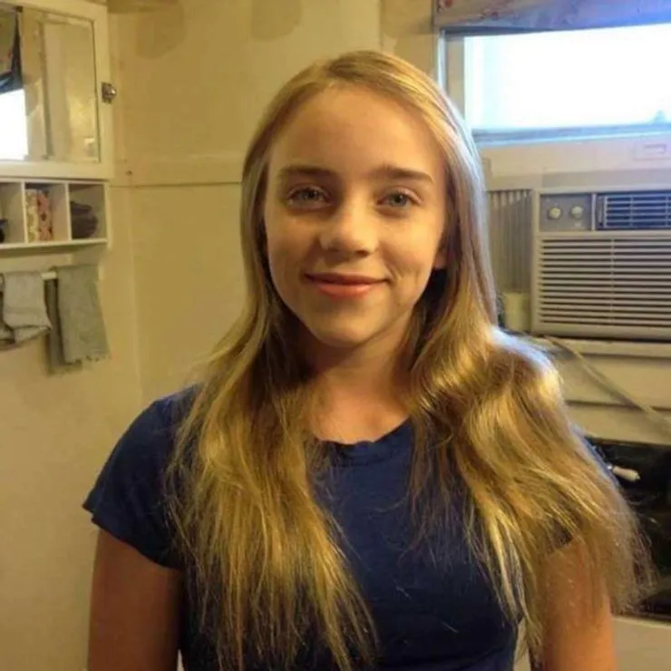
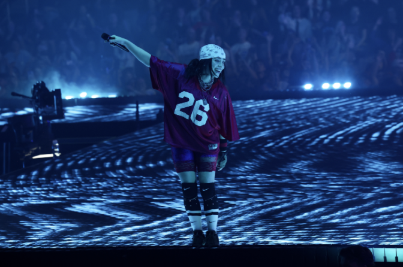

Billie Eilish
A L B U M S
don't smile at me (2017)
- 1. COPYCAT
- 2. idontwannabeyouanymore
- 3. my boy
- 4. watch
- 5. party favor
- 6. bellyache
- 7. ocean eyes
- 8. hostage
- 9. &burn (with Vince Staples)
WHEN WE ALL FALL ASLEEP, WHERE DO WE GO? (2019)
- 1. !!!!!!!
- 2. bad guy
- 3. xanny
- 4. you should see me in a crown
- 5. all the good girls go to hell
- 6. wish you were gay
- 7. when the party's over
- 8. 8
- 9. my strange addiction
- 10. bury a friend
- 11. ilomilo
- 12. listen before i go
- 13. i love you
- 14. goodbye
Happier Than Ever (2021)
- 1. Getting Older
- 2. I Didn't Chane My Number
- 3. Billie Bossa Nova
- 4. my future
- 5. Oxytocin
- 6. GOLDWING
- 7. Lost Cause
- 8. Halley's Comet
- 9. Not My Responsibility
- 10. OverHeated
- 11. Everybody Dies
- 12. Your Power
- 13. NDA
- 14. Therefore I Am
- 15. Happier Than Ever
- 16. Male Fantasy
HIT ME HARD AND SOFT (2024)
- 1. SKINNY
- 2. LUNCH
- 3. CHIHIRO
- 4. BIRDS OF A FEATHER
- 5. WILDFLOWER
- 6. THE GREATEST
- 7. L'AMOUR DE MA VIE
- 8. THE DINER
- 9. BITTERSUITE
- 10. BLUE
C A R E E R
Before Fame

Before rising to fame, Billie Eilish Pirate Baird O’Connell was born on December 18, 2001, in Los Angeles, California, into a family deeply involved in the arts (Britannica,2024).
Her parents, Maggie Baird and Patrick O’Connell, were both actors and musicians, creating a creative household that encouraged artistic expression (Rolling Stone, 2024).
She and her older brother, Finneas O’Connell, were homeschooled, which allowed them the freedom to explore music and songwriting from a young age (Billboard, 2024).
At eight years old, she joined the Los Angeles Children’s Chorus, where she refined her vocal skills and developed a strong passion for music (BBC, 2024).
Breakthrough
Billie Eilish's breakthrough came in 2015 when she uploaded the song “Ocean Eyes” to SoundCloud, a track written by her brother, Finneas O’Connell (ArtsHub, 2025).
The song quickly went viral, attracting attention from major record labels and leading to a deal with Darkroom and Interscope Records (Rolling Stone, 2024).
In 2017, she released her debut EP, Don’t Smile at Me, which gained international recognition and charted in multiple countries (Billboard, 2024).
Her first studio album, When We All Fall Asleep, Where Do We Go? (2019), debuted at No. 1 on the Billboard 200 and won multiple Grammy Awards, solidifying her status as a global pop sensation (Forbes, 2025).

Awards

Billie Eilish has been nominated for 32 Grammy Awards, winning multiple times, including a historic sweep of the four major categories in 2020 (Wikipedia, 2024). In 2024,
she became the youngest person to win two Academy Awards for Best Original Song with her track “What Was I Made For?” from the Barbie soundtrack (ABC News, 2024).
That same year, she was honored as Apple Music's Artist of the Year for the second time (Los40, 2024).
Her achievements also include multiple MTV Europe Music Awards, American Music Awards, and a Juno Award for International Album of the Year (IMDb, 2024).
Tours
Billie Eilish's first, Don't Smile at Me Tour (2017–2018), supported her debut EP and introduced her to live audiences (Concert Archives, 2024).
This was followed by the When We All Fall Asleep Tour (2019), which promoted her first studio album and featured sold-out performances at major venues (Billboard, 2019).
In 2020, she embarked on the Where Do We Go? World Tour, but it was cut short due to the COVID-19 pandemic (Rolling Stone, 2020).
Her Happier Than Ever, The World Tour (2022) further established her as a top-tier live performer, with critically acclaimed shows (NME, 2022).
Currently, she is on her Hit Me Hard and Soft: The Tour (2024–2025), supporting her fourth album, Hit Me Hard and Soft. This tour spans North America, Oceania, and Europe.
